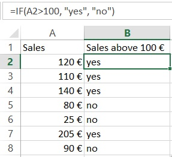
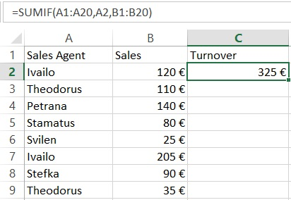
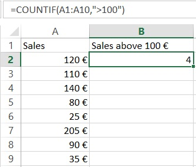
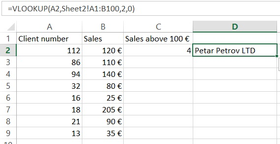
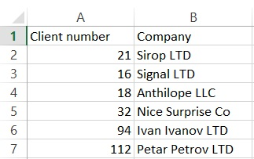
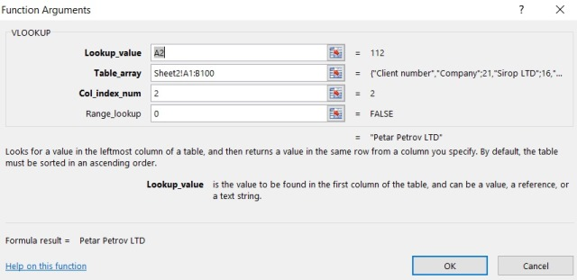
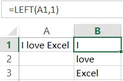
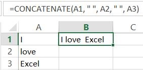
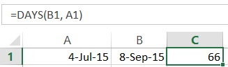
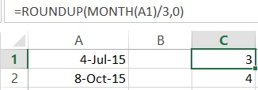

20 Excel Formulas You Should Start Using Now
MS Excel is one of the most popular data analysis tools in the world. More and more companies greatly depend on this software and quite a lot of people are using it on a daily basis. However, from my experience, not many are taking full advantage of the opportunities that the program can offer. Here is my list of the 20 most important Excel functions, which everyone should use in order to increase his efficiency. Excel functions are also highly recommended over manual calculations, as they can greatly reduce the number of errors. Last but not least, learning these formulas is a wonderful opportunity for you to improve your Excel knowledge and become a confident MS Excel user.
1. Sum
“Sum” is probably the easiest and the most important Excel function at the same time. You can use it to calculate sum of a range of cells.
= SUM(A1:A10) or = SUM(A1,A10)
In this example, the first formula sums the cells from A1 to A10. The second sums only cells A1 and A10. You can play around with it and try to use different ranges in order to get used to it. Please note that you can also use specific values inside the function, instead of references.
2. Average
Another very important function. As the name suggests, this formula estimates the average number from a range of cells. Suppose that we have a range of values in column A.
= AVERAGE(A1:A10)
This will return the average value of the cells from A1 to A10.
3. If
Another must-use formula. It is relatively easy to use and very powerful at the same time. You can use this function to check whether a statement is true or false and return the stated value.

= IF(A2>100,"yes","no")
Here, the formula looks for sales over 100 € in cell “A2”. If this statement is true, the formula returns “yes”. If the sales are below 100 €, the formula returns “no”.
4. Sumif
Sumif is another very important Excel formula. The formula will sum values, if a certain condition is met.

= SUMIF(A1:A20,A2,B1:B20)
Let’s have a look at the above example. We have sales agents who register a certain number of sales. We want to know the total number of sales for each agent. The function = SUMIF (A1: A20, A2, B1: B20) sums the values of cells B1: B20 that correspond to the text in cell A2 (in the case of Ivailo). The guy has registered a total sales of 325 €. We can use the formula to calculate the turnover of the other agents as well.
5. Countif
Countif is a very useful function that works like a sumif. It sums under a certain condition. The difference between sum and count is that the count function counts the number of cells where certain condition is true. On the contrary, the sumif function sums the values inside the cells.

= COUNTIF(A1:A10,">100")
The formula in the above example checks how many times sales are made over 100 € and returns the number of occurances. You can also include more than one criteria by using countifs for that purpose.
PS: If you are not sure about the syntax of a function, you can always use the Insert function option in Excel (Just press the function sign on the left side of the function bar). In the next example, we will demonstrate how this works.
6. Counta
This formula counts the number of cells from a specific range which are not empty. It is very useful when you have thousands of rows and you want to know where this all ends. Example 6.
= COUNTA(A:A)
This will give you the number of rows that contain value, text or any other symbol.
7. Vlookup
Probably the most powerful Excel function. Very useful when you have to deal with more than one table, different sheets or even a different workbook. Vlookup lets you exract data from one table to another.
Let’s continue with the above example by adding another column “A” with customer numbers.

Note that there is information about the sales and the customer numbers, but the customers’ names are missing. However, we have another Excel sheet (Sheet2) with client names and client numbers.

Instead of taking our time to look from Sheet1 to Sheet2 and search for a match manually for each single row, we should use the following formula:
= VLOOKUP(A2,Sheet2!$A$1:$B$100,2,0)
This formula looks up for the value in cell A2 (112 in our case) in sheet2, columns A & B (the “$” signs mean that we want to have a constant lookup range). The function then returns the value from the second column. The last part of the formula is 0. In this way we tell Excel to look for a match in a shuffle order, not only in one row.
Now, try to construct your own vlookup formula using the insert formula option.
In our case, it looks like this:

8. Left, Right, Mid
The left, right and mid functions are very important functions that allow you to extract a definite number of symbols from a string

= Left(A1,1) or = MID(A1,4,6) or = RIGHT(A1,5)
In our example, with the Left formula, we take the first character from the left side. With the right formula we can do the same, but with the symbols from right to left. Keep in mind that the space is also a symbol.
9. Trim
Another exceptional MS Excel feature. The trim function removes unnecessary spaces after the words, when they are more than one. This can happen quite often in Excel. It may be that the information is extracted from different databases and it is full of unnecessary empty spaces between the words. This can be a huge problem because your Excel fomulas may not work. To get rid of the annoying empty spaces, we use the Trim formula.
= TRIM(A1)
In this example, the formula will remove any extra spaces in case it finds more than one.
10. Concatenate
This is a handy Excel function that comes to help when we want to combine cells. Here, we want to merge cells A1, A2, and A3. This can be done with the following function:
= CONCATENATE(A1,A2,A3)
In this way, however, we will not have any spaces between the words. To add blanks between “I” and “ love”, we need to add a space. This can be addressed by adding quotes inside the function:
= CONCATENATE(A1," ",A2," ",A3)

PS: You can also merge the cells by simply adding:
= A1&" "&A2&" "&A3
Try it yourself!
11. Len
Another amazing formula that can be applied in many situations. It is widely used for construction of more complicated formulas.
= LEN(A1)
This function will count the number of symbols in a cell.
12. Max
The max function returns the largest value from a range.
= MAX(A2:A8)
This formula will look in cells A2:A8 and it will then extract the highest value from this range.
13. Min
The min function functions in a similar way as the max function, however it gives the opposite result. It extracts the lowest value from a range of data.
= MIN(A2:A8)
The formula from the above example will return the smallest number from the selected cells in column “A”.
14. Days
This is the function when you need to estimate the number of days between two days in a spreadsheet.
= DAYS(B1,A1)
The formula will return the number of days that have passed.

15. Networkdays
Sometimes you want to work with working days only. This function operates in a very similar way to the above example. The difference is that it returns the working days that have passed, excluding the weekends.
16. SQRT
This is pretty simple and quite useful at the same time. As the name suggests, the formula gives the square root of a number
= SQRT(1444)
This will return the square root of 1444 (38). You can also use cell reference here, just like in many other Excel formulas.
17. Now
Sometimes you need to know the current date, when you open Excel spreadsheet. Example
= NOW()
This will return the current date. Do not forget to set the format to date. You can play around with it as much as you want. You can, for example, add or subtract days. =Now() -14 will return the date before two weeks.
18. Round
The Round function is very useful, when you have to work with rounded numbers. Excel can show numbers to a specific character, but retains the original number and uses it for calculations. In some cases, however, this could be an issue and we need to work with rounded numbers only. In such cases, the ROUND function comes into our help.
= ROUND(B1,2)
In the example, the number is rounded to the second decimal.
19.Roundup
This is a variation of the round formula that can help a lot In some cases. It rounds the value up to the closest integer. It is very useful in combination with other Excel formulas. Let’s have a look at this example:
= ROUNDUP(MONTH(B3)/3,0)
Here, we want to find in which quarter of the year a current date is. The secret to this formula is simple math. The function takes the number of the month, e.g January is 1, February is 2, etc. and then divides it by 3, rounding up to the closest higher number.

20. Rounddown
Rounddown works in a similar way as Roundup, however it rounds the number down to the closest integer
= ROUNDDOWN(20.65,0)
This will return 20.
Excel has many useful functionalities. This article attempts to present the most important formulas in MS Excel in the best comprehensive way possible. We believe that these functions are a very good base for those of you who want to develop their Excel skills. By mastering these formulas, you can easily handle most day-to-day situations that may occur when working with Excel and it is a really nice opportunity further develop your skills.
© 2017 Atanas Yonkov